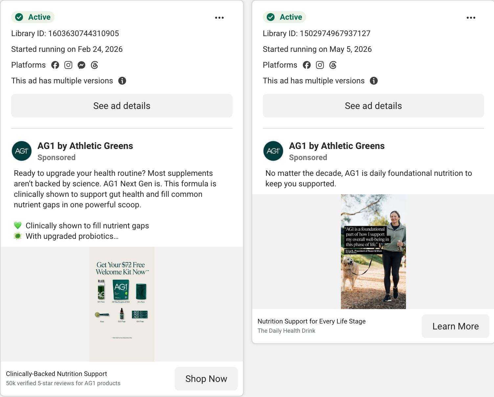

Eighty-seven percent of the active ads are dynamic variants of one modular frame. Ten percent are creator testimonials. Three percent are statics. Every one of them repeats the same claim in a new costume.

Source · Meta Ad Library, "AG1", active ads, captured 03 Sep 2026